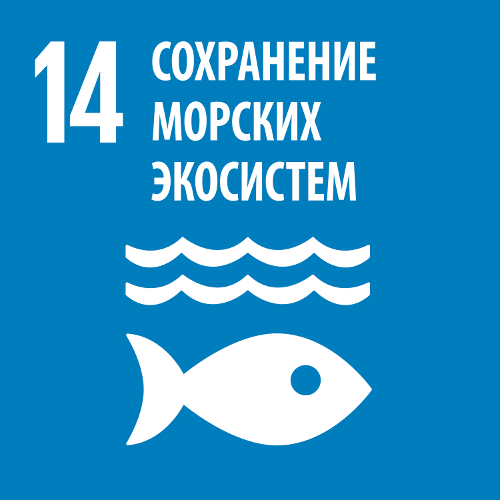
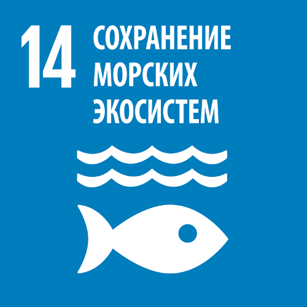
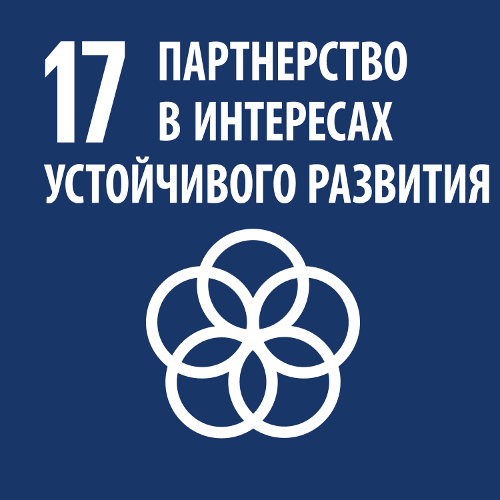
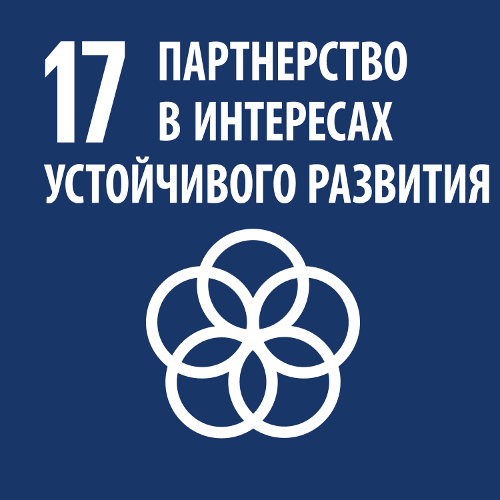

30 полнометражных мультфильмов про экологию
Толеубеков Жасулан
Союз зверей(2010) - 1ч 33 мин(12+)
- Изменение климата
- Иссыхание водоема
- Загрязнение окружающей среды
Группа африканских животных находится в ожидании ежегодного наводнения, которое обеспечивает их водой и пищей.
Друзья выясняют, что люди построили дамбу, мешающую проходу воды. Дикие животные, возглавляемые сурикатом по
имени Билли, объединяют свои силы, чтобы послать людям сообщение
чтобы они не вмешивались в природу…
WALL·E (2008) - 1 ч 38 мин (3+)
- Загубленная экология
- Загрязнение окружающей среды
В начале XXII столетия из-за огромного количества неперерабатываемых
отходов планета становится совершенно непригодной для жизни. В попытке сохранить
человечество в 2105 году Buy’n Large осуществляет вылет в космос на борту звездолётов Аксиома
Через 700 лет, планета
по-прежнему заполнена мусором, часть из которого роботы уже сложили в многочисленные огромные небоскребы
Робот ВАЛЛ·И, последний оставшийся робот из года в год прилежно трудится на опустевшей Земле, очищая нашу
планету от гор мусора, которые оставили после себя улетевшие в космос люди.
Длительная работа способствовала развитию в нём личности. Он собирает всевозможные
остатки былой цивилизации, среди миллионов тонн мусора, и пробует найти им применение
Самой же необычной находкой становится
растение, которое робот пересаживает в старый ботинок. Однажды на планету прилетает ЕВА — исследовательский
робот,
посланный с «Аксиомы» для поиска растительной жизни
ВАЛЛ-И показывает ей найденное растение и она сразу же помещает
растение в специальное хранилище, перейдя в режим ожидания
Вскоре ЕВА показывает капитану корабля растение и видеозапись с ее операции Земли.
Капитан потрясён обстановкой на Земле и решает, что люди должны вернуться и
исправить это положение
Однако АВТО настаивает на том, что они не могут вернуться на Землю, и показывает запись 2110 года, в которой
глава компании BNL, Шелби Фортрайт даёт указание автопилотам никогда не возвращаться на Землю, так как планета
никогда уже не будет пригодна для жизни…
В конце мультфильма мы можем заметить холмы, покрытые растительностью, что значит, что люди вместе с роботами
восстанавливают Землю и начинают новую жизнь. После окончания титров ВАЛЛ-И меняет перегоревшую лампочку
накаливания на белой настольной лампе студии Pixar на энергосберегающую
Lorax (2012) - 1 ч 26 мин (3+)
- Загрязнение окружающей среды
- Вырубка лесов
- Потеря биоразнообразия
В этом антиутопическом будущем все деревья, которые растут в
городе – сделаны из пластика, а чистый воздух продается в бутылках
Но однажды все меняется, когда мальчишка по имени Тэд решается найти для
своей подруги настоящее живое дерево. В своих поисках мальчик сталкивается с отшельником Находкинсом, который
может помочь Тэду осуществить мечту
Об этом узнаёт О’Хара — владелец компании,
продающей чистый воздух в бутылках, которому невыгодно появление
деревьев, так как растения очищают воздух бесплатно
Он угрожает Теду, пытаясь заставить того перестать выезжать за город,
однако Тед не внимает его угрозам. Получив от
Находкинса последнее семя живого дерева, он сажает семечко в центре города
Вскоре вся долина вновь зацветает, а Находкинс впервые за
много лет выходит из дома. Лоракс возвращающяется и хвалит его за то, что он в конце концов загладил свою вину
перед природой
Снят по мотивам одноименной детской книги Доктора Сьюза
Странный мир (2022) - 1 ч 42 мин (8+)
- Вредный источник энергии
- Баланс экосистемы
Две вещи, за которые всегда борются, — это удобство сегодняшнего дня и потребность в завтрашнем дне.
Представьте, что вы обнаружили, что живете на спине живого существа, и то, что вы делаете, наносит ему вред
Если бы мы потеряли определенные источники энергии, это усложнило бы ситуацию, но в конечном итоге могло бы
быть лучше для планеты. Что бы вы сделали?
Во время экспедиции со своим отцом искателем, Клейд обнаруживает таинственное растение под названием пандо.
Благодаря пандо граждане Авалонии имеют инновационные технологии, но в последнее время сила пандо начала
иссякать
Фермер Клейд и его семья отправляются в глубины своей страны, чтобы разгадать
причину истощения запасов энергии и спасти всех от надвигающейся угрозы. Во время
путешествия они натыкаются на мир, расположенный глубоко под землей, под их
родным городом Авалония
Вынурныв из пещеры Клэйд и его сын увидели огромный глаз существа, над которым возвышаются горы. Выясняется,
что Авалония на самом деле стоит на спине существа, а странный мир, который Клэйды исследовали на
протяжении всего путешествия, на самом деле является внутренностями существа
Клэйд понял что пандо это не растение производящее энергию, а своего рода паразит, который медленно убивает
гиганта. После этого открытия семья Клэйдов стоит перед тяжелым выбором: Спасти ли пандо, что приведет к
гибели
существа, на котором они живут. Или уничтожить пандо и спасти свой мир, отказавшись от удобств своей жизни
Через год после основных событий жители Авалонии более или
менее приспособились к своему новому образу жизни без всех современных удобств, которые они когда-то применяли
в повседневной жизни. Это вдохновляет и заставляет зрителей задуматься о будущем нашей планеты
Лесная братва (2006) - 1 ч 23 мин (12+)
- Животные питающиеся отходами
- Потеря мест обитания
Мультфильм повествует нам о жизни маленькой
группы животных. Пробудившись от зимней спячки они обнаруживают
на ареале своего обитания загадочную живую изгородь
Главный любитель чипсов, енот Эр-Джей уверен, что данная изгородь
отделяет лесных обитателей от людей, у которых есть настолько много еды, что они ее попросту выкидывают. Он
уговаривает всех лесных друзей преодолеть изгородь, чтобы украсть у людей еду
Основан на одноимённой серии комиксов Майкла Фрая и Т.Льюиса
Реальная белка 2 (2017) - 1 ч 31 мин (6+)
- Животные питающиеся отходами
- Потеря мест обитания
Мэр города Малдун решает превратить Либерти-парк в парк атракционов Либертилэнд, чтобы получить побольше
прибыли. Злюк и Энди раскрывают коварный замысел мэра,вместе они убеждает животных саботировать строительные
работы
Мэр вызывает специальный отряд для уничтожения животных, чтобы захватить Злюка и его друзей. Злюк остается
единственным из зверей, кого не поймали живодеры в ходе операции. Злюк убеждает господина Фэнга и его мышиную
армию, что животные должны сотрудничать и помогать друг другу
независимо от того, живут они в городе или в парке
Злюк при помощи армии мышей освобождает своих друзей и отбивает Либерти-парк.
Им удается сокрушить людей Мэра и разрушить все аттракционы. Через несколько месяцев после закрытия
Либертилэнда, люди помогают восстановить Либерти-парк и вернуть его в
прежнее состояние
Мадагаскар 2 (2008) - 1 ч 29 мин (3+)
Когда на водопое исчезает вода, король Джулиан уговаривает всех принести
кого-нибудь в жертву, думая, что это гнев богов. На самом же деле это была
плотина, построенная людьми. Мелман вызывается стать жертвой для вулкана
Тем временем Алекс отправляется за пределы заповедника, чтобы вернуть воду и
попадает в ловушку туристов. Марти и пингвины успевают спасти Алекса, попутно
разрушив плотину. Вода хлынула
по засохшему руслу и животные поприветсвовали своего спасителя Алекса
Рио 2 (2014) - 1 ч 41 мин (3+)
- Вырубка тропических лесов
- Вымерающий вид
Голубчик, Жемчужинка и их дети — Карла, Умничка и Тьяго — счастливо живут в заповеднике. Жемчужинка говорит
Голубчику о том, что дети очень сильно зависят от благ цивилизации и должны хоть раз почувствовать себя
настоящими дикими птицами
В ходе экспедиции на Амазонке Тулио и Линда находят перо голубого ары, что свидетельствует о том, что семья
Голубчика не является единственным представителем данного вида
Жемчужинка считает, что поездка к
родственникам на Амазонку будет отличной возможностью показать детям мир. Голубчик неохотно соглашается на
предложение Жемчужинки и семья отправляется в путь
Линда и Тулио увидели лесоруба, который спиливал деревья в лесу.
Тулио и Линда, вместе с голубыми ара пытаются остановить вырубку леса.
На этот раз к ним присоединяются
красные ара, после чего они вместе нападают на лесорубов и защищают свой дом
Бэмби (1942) - 1ч 10 мин (3+)
- Охота на диких животных
- Поджог леса
Мультфильм начинается с рождения нового Принца леса — оленёнка Бэмби.
Вместе со своими друзьями он учится ходить, говорить и знакомится с другими обитателями леса.
Вслед за осенью приходит зима — самое трудное время в жизни Бэмби — но и она не длится вечно.
Появляются первые лучи весеннего солнца, и Бэмби вместе с матерью снова отправляются на луг, где находят
первую весеннюю
траву. Увы, мирная прогулка заканчивается трагедией — пуля охотника настигает маму Бэмби. Не разобравшись в
том, что
случилось, Бэмби тщетно пытается отыскать свою мать в погружающемся в ночную тьму лесу
Но к сожалению, вместо мамы он находит Великого Князя леса, который даёт понять, что мама больше не придёт.
Наступает весна, и старые друзья встречаются снова. Бэмби уже совсем не тот, что
раньше — у него выросли рога, и из застенчивого и пугливого ребёнка он превращается в молодого оленя
Но самая главная опасность ещё впереди — человек устраивает пожар.
Превращённый в пепелище лес начинает перерождаться
Долина папоротников: Последний тропический лес (1992) - 1 ч 16 мин (6+)
- Вырубка тропических лесов
- Загрязнение окружающей среды
В таинственном тропическом лесу обитают феи, которые никогда не видели людей и полагают, что они существуют
только в мифах и преданиях. Феи и их обитель оказываются в смертельной опасности, поскольку люди, уничтожают
тропический лес
Своими мощными бульдозерами они сносят подкорень вековые деревья,
случайно освободив при этом Хексуса — злого духа, ранее заточенного в дерево.
Бэтти Кода объединяется с феей по имени Криста и Заком, чтобы остановить хаос, развязанный Хексусом…
Дикая семейка Торнберри (2002) - 1 ч 25 мин (3+)
- Браконьерство
- Защита окружающей среды
В центре сюжета не совсем обычная семья Торнберри, которая путешествует по всему миру.
Для 12-летней Элизы Торнберри нет ничего необычного в путешествиях по разным странам, ведь ее папа
является ведущим популярной документальной передачи Животный мир глазами Найджела Торнберри,
рассказывающей о жизни дикой природы
Пока родители заняты работой,
Элиза разговаривает с животными на их языке. Да, да, после встречи с африканским
шаманом, девочка научилась общаться с представителями фауны, но это ее большой секрет. Чтобы не
потерять этот волшебный дар, девочка не должна никому о нем рассказывать!
Однажды Элиза узнает, что браконьеры планируют
уничтожать стадо слонов и решает помочь бедным животным при помощи ее
верных друзей: Дарвина и ее домашнего животного Чимпа. Удастся ли ей спасти слонов?
Пропавший рысенок (2008) - 1 ч 32 мин (12+)
- Браконьерство
- Защита окружающей среды
Увлекательная история о Феликсе – бесстрашном рысенке,
не представляющем жизни без приключений.
Также у малыша есть лучшие друзья – хамелеон, коза и сокол
Однажды герои узнают, что в их лесу оказался злобный охотник.
Этот человек уже успел поймать множество зверей, обреченных на страшные испытания.
Феликс с друзьями должен помешать отчаянному плану охотника освободить
других животных из его рук
Тем же временем Феликс и его друзья сталкиваются с эксцентричным миллионером.
Он хочет построить огромный ковчег и заселить его всеми существующими на планете
животными. Удастся ли ему справиться со столь сложной миссией?
Вверх (2009) - 1 ч 36 мин (3+)
Карл Фредриксен с самого детства был поклонником Чарльза Манца — исследователя
Райского водопада. Всю жизнь его жена, Элли хотела попасть в Южную Америку к Райскому водопаду
Ближе к старости Карл решил реализовать её мечту попасть на Райский водопад, но она
умерла незадолго до поездки. Чтобы избежать сноса дома, наполненного памятью о жене, мистер Фредриксен
привязывает надувные шарики к своему дому и
пускается в воздушное плаванье
Оторвавшись на сотни метров от земли и предвкушая удовольствие от
полного одиночества, мистер Фредриксен был встревожен стуком в дверь. Решительно
порывая с миром, старик не заметил, что унес с собой школьника, пришедшего его навестить
Сначала они встречает огромную редкую
птицу (бекаса), которую Рассел назвал Кевином. А потом они встречают пса Дага,
который при помощи специального ошейника может говорить
Затем они встречают Чарльза Манца, который намерен поймать Кевина и отомстить учёным, не признавшим его
открытий. Но Чарльз подозревает что Карл пришел поймать его птицу и забрать у себе его славу.
Теперь Карлу предстоит драться со своим кумиром, чтобы выжить…
Bee movie: Медовый заговор (2007) - 1 ч 30 мин (3+)
- Защита пчел
- Продовольствие
- Важность опыления
Эта история про пчелку по имени Барри Би Нельсон. Он только что закончил колледж
и не желает жить унылой жизнью сборщика меда. Пустившись в бродяжничество, Барри отправляется в Нью-Йорк
Там ему открывается правда о том, что мед, который они - пчелы с таким трудом добывают, люди, оказывается,
просто съедают. Барри решает бороться за авторские права на мед и предьявляет иск человечеству в суде
Шевели ластами (2010) - 1 ч 28 мин (3+)
- Разлив нефти
- Загрязнение океана
Сюжет мультфильма повествует об удивительных приключениях маленькой черепашки по
имени Сэмми,вылупившаяся в 1959 году. Он проводит следующие 50 лет, путешествуя
по миру, в то время как глобальное потепление меняет ее.
В режиссерской версии мультфильма присутсвует эпизод где, Сэмми и Рэй развлекаются с осьминогом, но разлив
нефти на танкере превращает их веселье в кошмар. Также в мультфильме есть эпизод с китоловами, которые
пытаются поймать
синего кита, охота на которых была полностью запрещёна в 1966 году
В мультфильме также есть эпизод где рыбаки перетаскивают тяжелые рыболовных сети по дну океана, а это в свою
очередь уничтожает морскую жизнь и коралловые рифы, хоть и служит легким способом ловли рыбы.
Помимо этого донное траление также высвобождает шлейфы углерода, который в противном случае безопасно хранился
бы на дне океана в течение тысячелетий
В продолжении истории черепаха по имени Сэмми и его
друг Рэй уже довольно старые черепахи, поведавшие на своем веку немало приключений.
Однако теперь они ведут
спокойную и размеренную жизнь, присматривая за недавно вылупившемся потомством
Однажды юный черепашонок Рикки становится свидетелем того, как дедушек похищают браконьеры.Заручившись
поддержкой своей подруги Элли, они вместе
отправляются на поиски любимых дедуль. Впереди их ждет далекое путешествие, с морем удивительных приключений
Риф (2019) - 1 ч 5 мин (6+)
- Утечка нефти
- Загрязнение морской экосистемы
Однажды, рыбки заметили подозрительные черные пятна.
Темные сгустки непонятного происхождения медленно опускались с поверхности и падали прямо на уютные жилища
каракатиц, кальмаров и мелких рыбешек, распространяя отвратительный резкий запах и вызывая страх у местных
жителей
Главный герой Алекс и его верные товарищи – угорь, морской конек и рыба-еж – осознают, что должны срочно
действовать,
чтобы избежать неминуемой гибели. Они решают уплыть, чтобы противостоять угрозе и спасти свой родной мир
Друзьям
предстоит долгий путь, во время которого их ждет немало удивительных встреч и поразительных открытий.
Преодолев все препятствия, приятели начинают понимать, где
необходимо искать виновников своих неприятностей
Завтра (2019) - 25 мин
- Глобальное потепление
- Повышение уровня моря
Ратул, мальчик из Бангладеша, сталкивается с божественным существом, которое
показывает ему 2 совершенно разных видения будущего. В первом исходе Бангладеш
затоплен из-за повышения уровня моря, что приводит к большим страданиям
Во втором видении будущего на ископаемое топливо накладывают налоги
и правительства стран инвестируют в возобновляемую энергию. Благодаря этим
решениям климатический кризис был предотвращен
Фердинанд (2017) - 1 ч 48 мин (6+)
- Коррида
- Вековые традиции
- Жестокое обращение с животными
Фердинанд — самый миролюбивый бык в Испании.
Несмотря на свои внушительные размеры и выдающуюся силу, он с детства предпочитал сидеть на траве и любоваться
цветами, а не драться с другими быками. По нелепому стечению обстоятельств Фердинанд был выбран среди других
быков, для
участия в корриде в Мадриде.
Фердинанду придется отстаивать свои миролюбивые
убеждения и помнить,что даже перед лицом трудностей самое главное – не отступать.
Ведь это единственный способ изменить мир вокруг нас
Спасти землю (2012) - 1 ч 21 мин (3+)
- Глобальное потепление
- Изменение климата
Сэмуэл Джонсон младший, вступил в бойскауты и пропал во время похода. Сэм провалился
сквозь землю и оказался на противоположном конце света- в непроходимых джунглях
Из-за того, что люди перестали беречь Землю наша планета в опасности и только он
может ее спасти. А помогать ему в этом нелегком деле будет бесстрашная воительница Нарва
Друзей ждут необыкновенны приключения и
практически нереальная задача - cпасти Землю, когда против тебя весь мир
Однажды в лесу (1993) - 1 ч 11 мин (6+)
- Защита животных
- Химические отходы
Сказочная история, наполненная невероятными приключениями, о дружбе маленьких зверят, обучающихся в лесной
школе, расположившейся на опушке под кроной старого дуба, где преподает мудрый бобёр Корнелиус
Однажды Мишель - девочка-барсучёнок, вместе со своими одноклассниками - ёжиком Расселом, деловым кротом
Эдгаром и скромницей мышкой Эбигель были на занятии проводимом на природе, когда малыши нашли
асфальтированную дорогу
Зверушки становятся очевидцами несчастного случая: грузовой автомобиль, перевозящий
отходы химического производства в цистерне, переворачивается. Содержимое резервуара стало из него протекать и
смертельные пары ветром понесло в сторону поселения пушистиков
В результате аварии серьезно отравилась Мишель, и учитель Корнелиус
отправил оставшихся учеников в трудное путешествие в соседний лес за
лекарственной травой
Семейка бигфутов (2020) - 1 ч 29 мин (6+)
- Защита окружающей среды
- Производство нефти
События разворачиваются вокруг необычной семьи, глава которой обладает
удивительной способностью понимать язык животных. Его сын унаследовал этот
необычный дар, в результате чего все семейство стало общаться с самыми разными
лесными зверьками
Однажды герои неожиданно узнают, что огромный природный заповедник,
расположенный на Аляске, оказался под угрозой
уничтожения и теперь им предстоит отправиться в опасное путешествие,
чтобы предотвратить катастрофу…
Тачки 2 (2011) - 1 ч 52 мин (3+)
Майлз Карданвал, разработал экологически чистое топливо Аллинол.
Он намерен продвигать свою разработку на Мировом Гран-при, куда приглашает лучших
гонщиков со всего мира. Маккуин и его друг Мэтр вместе с Луиджи, Гуидо, Филмором
и Сержантом отправляются в Токио на первый этап
Тем временем злой профессор, захватывает спецагента и заливает в него новое
топливо, которое загорается при наведении особого луча. Его двигатель взрывается,
после подвержения излучению.
На первой гонке 3 гонщиков загораются из-за лазерной пушки, замаскированной под
телекамеру. Из-за возросших опасений за безопасность Майлз Карданвал отменяет
требование использовать своё топливо для финальной гонки, однако Маккуин, не
подозревающий ни о чём плохом, решает залить себе алинол.
Мэтр и Маккуин отправляются в Букингемский дворец, где Мэтр рассказывает, что организатором заговора был не
кто
иной, как сам сэр Майлз Карданвал. Общественность в шоке, но Мэтр твёрдо стоит на своём. Майлз отпирается и в
последнюю секунду отключает бомбу
В довершение ко всему, когда Мэтр открывает его капот, выясняется, что он не
первый в мире электромобиль, а простая машина с двигателем внутреннего сгорания,
совпадающим с двигателем организатора заговора. Сэра Майлза Карданвала
арестовывают
Мавка. Лесная песня (2023) - 1 ч 39 мин (6+)
Древний волшебный Лес никогда не пускал людей в свои таинственные глубины. Люди из соседнего села и сами
держались
от него подальше — думали, что Лес опасен, потому что в нем обитают загадочные лесные существа
Мавка — одна из тех самых лесных созданий, душа Леса и его будущая царица, — и
Лукаш, простой деревенский кузнец, полюбили друг друга. Но их миры пошли войной
друг на друга. А все из-за появления в селе коварной
Килины, которая построила рядом с лесом фабрику, задумав уничтожить Лес…
Делай ноги (2006) - 1 ч 48 мин (12+)
Мультфильм рассказывает о приключениях императорского пингвина по имени Мамбл.
Для пингвинов этого семейства главным является умение петь, ведь это основной
способ найти себе пару.
Мамбл родился с нарушением связок, и вместо пения издавал ужасные звуки похожие
на скрежет. Однако у него был другой дар, пингвиненок прекрасно танцевал чечетку.
Из-за чего тот становится изгоем среди своих
На своём пути к далёким берегам Мамбл знакомится с пятёркой пингвинов Адели, вместе с которыми он
освободит местного гуру от странной удавки на шее (то
есть держателя для перевозки алюминиевых пивных банок), а также войти в контакт с
«пришельцами», которые вылавливают всю их рыбу
В самом финале Мамбл попадает в зоопарк, где едва ли не теряет рассудок.
Однажды маленькая девочка пытается
достучаться до Мамбла сквозь толстое стекло вольера, и Мамбл
вдруг начинает танцевать
Люди приходят в восторг, отвозят его к родичам в Антарктиду и решают больше не
вылавливать рыбу возле её берегов
Роботы (2005) - 1 ч 31 мин (6+)
- Капитализм
- Потребительское отношение
Действие разворачивается вокруг простодушного робота Родни, мечтающего
стать изобретателем. Однажды главный герой решает перебраться в Робот-Сити, а
затем встретиться с одаренным изобретателем и его кумиром Бигвелдом, стараясь
получить работу в его корпорации
Когда Поршень неожиданно становится новым президентом компании, принадлежащей
Бигвелду, он принимает спонтанное решение отказаться от поставки деталей для ремонта
старых роботов, а его главная цель — вынудить жителей покупать исключительно новые корпуса
Желая помочь Бигвелду вернуть собственный пост, Родни и его друзья отправляются в увлекательное путешествие…
Тетя Хильда (2013) - 1 ч 29 мин (8+)
Тетушка Хильда, большая любительница природы, содержит целый зеленый музей — в
огромной теплице у нее растут тысячи и тысячи растений со всех уголков мира.
Безжалостная сельскохозяйственная компания объявляет, что они создали новую
генетически модифицированную зерновую культуру под названием Аттилем, который, искоренит голод в мире
Она не требует воды, не нуждается в удобрениях и дает обильный урожай.но
тетя Хильда подозревает, что что-то не так. Гибрид грозит заполонить мир и
уничтожить все остальные растения, включая оранжерею тетушки Хильды
Спасатели в Австралии (1990) - 1 ч 17 мин (6+)
Далеко в необъятных и непредсказуемых прериях Австралии 9-летний мальчик Коди
дружит со здешними дикими животными и всячески им помогает, если кто-то из
зверушек угодил в ловушку. Однажды юный герой спасает от гибели самку орла,
за которой охотится беспринципный браконьер Персиваль Маклич
Злодей ловит мальчика и угрожает убить, но маленький мышонок,
которого ребенок выручил раньше, отправляет в Нью-Йорк радиотелеграмму с просьбой
о помощи. Из-за океана, оседлав альбатроса по имени Уилбур, спешат на выручку
двое храбрых мышиных оперативников, Бернард и мисс Бьянка
Мальчик и мир (2013) - 1 ч 20 мин (6+)
- Загрязнение окружающей среды
Мальчик Кука живёт в маленькой деревушке. Отчаявшись найти работу здесь, его отец
садится в поезд и уезжает в столицу. Несколько недель после этого, жизнь Куки
состоит из грустных воспоминаний. Но вдруг в окно его комнаты врывается порыв
ветра и уносит мальчика в волшебный мир, полный чудес и необычных существ
Огрики (2021) - 1 ч 25 мин (6+)
Семейство Огриков на большом зеленом драконе прилетает в тихий город Нюхвиль,но
местные жители почему-то им совсем не рады. И никто кроме юного изобретателя
Макса и его подруги Лотти не подозревает, что только Огрики смогут спасти
город от надвигающейся опасности
Основано на книгах Эрхарда Дитля
Маленький полярный медвежонок: Полет мечты (2003) - 1 ч 16 мин
- Нефтевое загрязнение
- Браконьерство
Белый медвежонок по имени Ларс, живет на северном полюсе среди бесконечного льда
и снегов. Полярный закон гласит: каждый держится своей стаи и общается только
с сородичами. Но вот Ларс встречает компанейского весельчака Робби, с
которым можно прекрасно провести время
Перед друзьями возникает невиданная напасть: в окрестностях появляется громадный,
прожорливый, металлический монстр, поедающий всю рыбу. Чем будут питаться местные жители?
Чтобы спасти свою семью и друзей от браконьеров, полярный медвежонок Ларс отправляется в далёкое
путешествие, где его ждут потрясающие приключения и новые друзья!
Собачья дверца (2007) - 13 мин 39 сек
Фильм создан по повести Константина Сергиенко До свидания, овраг
о печальной истории бездомных собак
Дух живого леса (2008) - 1 ч 14 мин
Влиятельный бизнесмен собирается строить автомагистраль, а злобная миссис Д’Абондо только и ждет повода, чтобы
избавиться от Леса. Деревьям Живого леса и старому Дубу грозит опасность, и те советуют животным, обитающим в
Лесу, спасаться бегством
Однако кроты Фури и Линда, а также мышонок Пьорно не собираются сдаваться. К ним присоединяется маленький
пугливый крот Себоло, недавно переехавший из города в Лес.
На помощь друзьям также приходит клан диких кошек под предводительством храброго Тигра. Когда друзья
обнаруживают, что миссис Д’Абондо боится привидений, Фури в голову приходит отличная идея... пробудить Дух
Живого Леса

 


 
